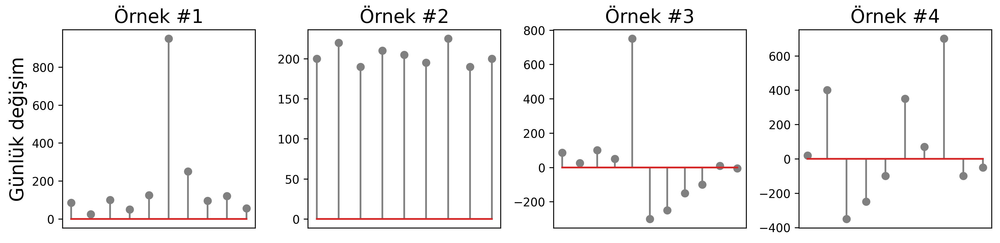
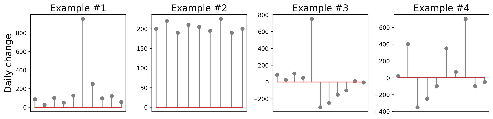

Sosyal medyanın önemli problemlerinden birinin başında sosyal botlar gelmektedir. Bir bilgisayar yazılımından faydalanılarak hesapların davranışlarını kontrol etmek mümkün olmaktadır ve bu otomasyon sosyal bot geliştirmek için veya gerçek bir hesaba organik olmayan görünürlük ve etkileşim kazandırmak için kullanılabilir. Bazen kullanıcının izin verdiği uygulamalar hesap sahibinin dahi haberi olmadan içerik yazmakta, paylaşmakta ve beğenebilmektedir. Ayrıca sosyal ağdaki diğer hesapları takip edip, takipten çıkarmak da bu araçlarla mümkün olabilmektedir.
Özellikle kullanıcılar kendilerini sosyal medyada daha fazla görünür kılmak amacıyla bu otomasyon araçlarına sıklıkla başvurmaktadır. Bu yazımızda siyasi hesapların takipçi değişimlerinde gözlenen trendleri analiz etmek için geliştirdiğimiz aracı tanıtacağız. Proje süresince sahte takipçilerin tespiti, trend konuların manipülasyonu üzerinde hazırladığımız uygulamaları sizlere sunuyor olacağız.
Projemiz kapsamında derlemekte olduğumuz #Secim2023 veri seti ile siyasilerin takipçi sayılarını günlük olarak takip etmekteyiz. Burada günlük değişimleri inceleyerek önemli olayları ve normal dışı takipçi hareketlerini de takip edebilmekteyiz.
Öncelikle şunu belirtmemiz oldukça önemli. Takipçi kazanmak ve kaybetmek bir hesabın kontrolü dışında gerçekleşiyor olabilir. Örneğin aşagıdaki senaryonaların hepsinin olası olduğunu göz önüne alarak inceleme yapmalıyız
Örneğin aşağıdaki gibi 4 örnek trendi inceleyebiliriz. Her örnekte ciddi günlük değişimler gözlenmektedir. Örnek #1 için gözlemlenen durumda kazanılan takipçiler önemli bir olayı takip eden gerçek takipçiler olabileceği gibi bot hesapların takibi ile de gerçekleşmiş olabilir. Ancak Örnek #3 ve Örnek #4 ile gösterilen trendlerde kazanılan takipçilerin kaybedilmesi veya çok tutarsız bir değişim göstermesi dikkat edilmesi gereken bir durumdur. Aynı şekilde Örnek #2 düzenli takipçi kazanmaktadır ancak bu takipçilerin aktiviteleri ve değişimin hesabın büyüklüğüne oranı da dikkatle incelenmelidir.
Bu sebeple geliştirdiğimiz takipçi sayısı izleme sistemin göstermiş olduğu sonucları daha iyi yorumlamak için söylem inceleme, ağ analizi ve bot tespit sistemleri de geliştirerek daha detaylı çalışmalar yapmaktayız.
Social bots pose an important problem to social media platforms. These are accounts partially or fully controlled by automation softwares. Sometimes, users provide access to 3rd-party applications to write, share and like content on their behalf and these applications can act without the knowledge of the account’s owner. These applications can also automate activities such as following and unfollowing other accounts.
These automation tools are often used to increase visibility and amplify the reach of a content. In this article, we will introduce the tool that we developed to analyze the trends in followers changes. During the project, we will regularly release new tools on the detection of fake followers and manipulation of trend topics.
We are tracking the number of followers of political figures through the #Secim2023 dataset that we are compiling as part of our project. Using this dataset we can track changes of followers daily to point to natural or abnormal growth patterns surrounded by important events.
First of all, we must mention a very important point: Gaining and losing followers can happen outside the control of an account. For example, we should consider that all of the following scenarios are possible:
We investigated four exemplary patterns of daily follower changes. All of these examples demonstrate noteworthy changes. Changes observed for Sample #1 may be due to organic engagement following an important external event or inorganic bot engagement. However, Samples #3 and #4 points significant gains and losses and requires additional attention. Also, Sample #2 has consistent growth but those numbers should be investigated with respect to overall follower counts.
To better understand the results shown by our follower count monitoring system, we are also developing discourse analysis, network analysis, and bot detection systems.